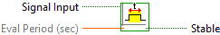
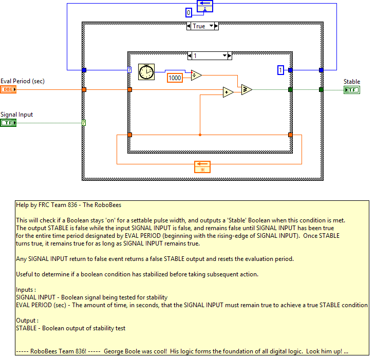
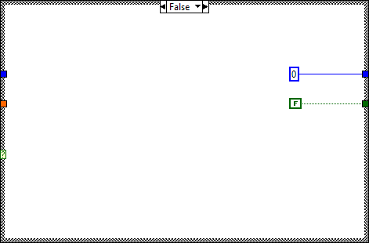

Help by FRC Team 836 - The RoboBees
This will check if a Boolean stays 'on' for a settable pulse width, and outputs a 'Stable' Boolean when this condition is met.
The output STABLE is false while the input SIGNAL INPUT is false, and remains false until SIGNAL INPUT has been true
for the entire time period designated by EVAL PERIOD (beginning with the rising-edge of SIGNAL INPUT). Once STABLE
turns true, it remains true for as long as SIGNAL INPUT remains true.
Any SIGNAL INPUT return to false event returns a false STABLE output and resets the evaluation period.
Useful to determine if a boolean condition has stabilized before taking subsequent action.

|
|
Signal Input |
|
|
Eval Period (sec) |
|
|
Stable |



"Stable.vi History"
Current Revision: 14